Chapter 14 Ensemble Learning and Random Forest
Ensemble learning is a powerful technique in machine learning that combines multiple models to improve prediction accuracy and reduce overfitting. Rather than using all predictors in one complex model, ensemble learning combines multiple simpler models, each trained on a subset of features and/or data. This approach results in a more robust learning system overall. The three main methods of ensemble learning are bagging, random forests, and boosting.
The concept behind ensemble learning is based on the idea of the “wisdom of crowds.” This theory suggests that the collective decision-making of a diverse, large group is often better than that of a single expert. When using a single robust model, poor predictors tend to be eliminated during training; however, each “weak” predictor may still offer a small but meaningful contribution when combined with others. Ensemble methods keep these weaker predictors in the system—rather than discarding them—allowing them to “vote” in the final decision. This is the main reason why ensemble methods are considered robust learning algorithms in machine learning.
14.1 Bagging (Bootstrap Aggregating)
CART models are known for their sensitivity to small changes in the training data, leading to different splits and consequently, a high variability in the model predictions. This variance makes them unstable, especially when the data set is not large enough or when it contains many features that may not all be relevant to the prediction task. To address this issue, ensemble methods such as bagging and random forests are used to reduce the variance of the model predictions.
Bagging gets its name from Bootstrap aggregating of trees. Bagging is a technique that improves model stability by reducing variance. The key idea behind bagging is to create multiple versions of a base model, typically decision trees, trained on different random subsets of the original dataset, and then aggregate their predictions for the final decision. These models then vote (for classification) or average their predictions (for regression) to generate the final output. The steps are as follows:
- Select number of trees (B), and the tree depth (D),
- Create a loop (B) times to create B trees with the following step,
2a. In each iteration:
- Generate a bootstrap sample from the original data.
- Fit (train) a tree of depth D on that bootstrap sample.
- For regression, average the predictions from all trees. For classification, take the majority vote.
Below is a simple example with the Titanic dataset, where we train B = 9 unpruned classification trees on nine bootstrap samples:
library(PASWR)
library(rpart)
library(rpart.plot)
# Load data
data(titanic3)
# Set up colors for plotting
clr <- c("pink","red","blue","yellow","darkgreen",
"orange","brown","purple","darkblue")
n <- nrow(titanic3)
par(mfrow = c(3, 3)) # 3x3 plotting area
# Train 9 trees (B = 9)
for(i in 1:9) {
set.seed(i * 2)
idx <- sample(n, n, replace = TRUE) # Bootstrap sampling
tr <- titanic3[idx, ]
cart <- rpart(
survived ~ sex + age + pclass + sibsp + parch,
data = tr,
method = "class",
cp = 0 # unpruned tree
)
# Plot each tree
prp(cart, type = 1, extra = 1, box.col = clr[i])
}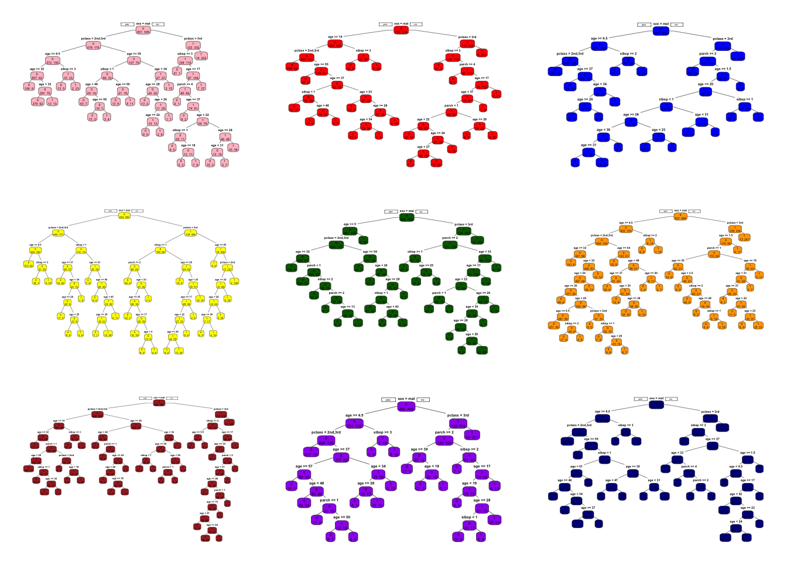
What do we do with these 9 trees?
- In regression trees (continuous outcome), the final prediction will be the average of all tree predictions.
- In classification trees (binary outcome), the final prediction is based on the majority vote.
Because averaging multiple predictions from bootstrap samples reduces variance, bagging often increases prediction accuracy. More importantly, compared to a single CART model, bagging results are much less sensitive to the specific training sample, resulting in impressive improvements in accuracy.
Below is an example that illustrates how to apply bagging in a classification context. We first fit a single tree model to the Titanic data, then compare its performance to a bagged model.
We first fit a single classification tree to the Titanic dataset and evaluate its performance.
library(ROCR)
library(rpart)
# Split into training and testing sets
set.seed(1)
ind <- sample(nrow(titanic3), nrow(titanic3) * 0.8)
train <- titanic3[ind, ]
test <- titanic3[-ind, ]
# Fit a single decision tree (pruned by default rpart complexity parameters)
cart <- rpart(
survived ~ sex + age + pclass + sibsp + parch,
data = train,
method = "class"
)
# Predicted probabilities on the test set
phat1 <- predict(cart, test, type = "prob")
# Compute AUC for the single tree
pred_rocr <- prediction(phat1[, 2], test$survived)
auc_ROCR <- performance(pred_rocr, measure = "auc")
single_tree_auc <- auc_ROCR@y.values[[1]]
single_tree_auc## [1] 0.8352739The dataset is split into an 80% training set and a 20% test set. A single decision tree is trained using rpart(). We compute the AUC (Area Under the Curve) to evaluate its classification performance.
Bagging many trees can improve the performance of a single tree. Next, we train 100 trees in this example. We will use the rpart package to fit the trees and the ROCR package to calculate the AUC.
B <- 100 # Number of trees
# Matrix to store predicted probabilities for each tree
phat2 <- matrix(0, nrow = B, ncol = nrow(test))
for(i in 1:B) {
set.seed(i) # For reproducibility
idx <- sample(nrow(train), nrow(train), replace = TRUE)
dt <- train[idx, ]
# Fit an unpruned classification tree
cart_B <- rpart(
survived ~ sex + age + pclass + sibsp + parch,
data = dt,
method = "class",
cp = 0 # No pruning
)
# Store predicted probabilities for the "survived = 1" class
phat2[i, ] <- predict(cart_B, test, type = "prob")[, 2]
}
dim(phat2) # Output: 100 x number of test observations## [1] 100 262We create \(B = 100\) bootstrap samples from the training data. Each tree is trained independently on its bootstrap sample. The result stored to phat2 which is a \(100 \times 262\) matrix. Each row corresponds to predictions from one of the 100 trees, and each column corresponds to one observation in the test set.
Now, we average the predictions across all trees to obtain the final predicted probability for each test observation. We then calculate the AUC for the bagged model to compare it with the single tree model.
# Average the predicted probabilities across the 100 trees
phat_f <- colMeans(phat2)
# Compute the AUC for the bagged model
pred_rocr <- prediction(phat_f, test$survived)
auc_ROCR <- performance(pred_rocr, measure = "auc")
bagged_auc <- auc_ROCR@y.values[[1]]
bagged_auc## [1] 0.8765668Expected Outcome from bagging should be the bagged model should have a higher AUC than the single tree, demonstrating improved classification performance. We can also examine how the number of trees (B) affects the AUC (or the mean squared prediction error, MSPE, in regression tasks):
B <- 300
phat3 <- matrix(0, nrow = B, ncol = nrow(test))
AUC <- numeric(B)
for(i in 1:B) {
set.seed(i)
idx <- sample(nrow(train), nrow(train), replace = TRUE)
dt <- train[idx, ]
fit <- rpart(
survived ~ sex + age + pclass + sibsp + parch,
data = dt,
method = "class",
cp = 0 # unpruned
)
phat3[i, ] <- predict(fit, test, type = "prob")[, 2]
# Compute cumulative average up to the i-th tree
phat_f <- if (i == 1) phat3[i, ] else colMeans(phat3[1:i, , drop = FALSE])
# Calculate AUC
pred_rocr <- prediction(phat_f, test$survived)
auc_ROCR <- performance(pred_rocr, measure = "auc")
AUC[i] <- auc_ROCR@y.values[[1]]
}
# Plot how AUC stabilizes as B grows
plot(
AUC,
type = "l",
col = "red",
lwd = 2,
xlab = "B - Number of Trees",
ylab = "AUC"
)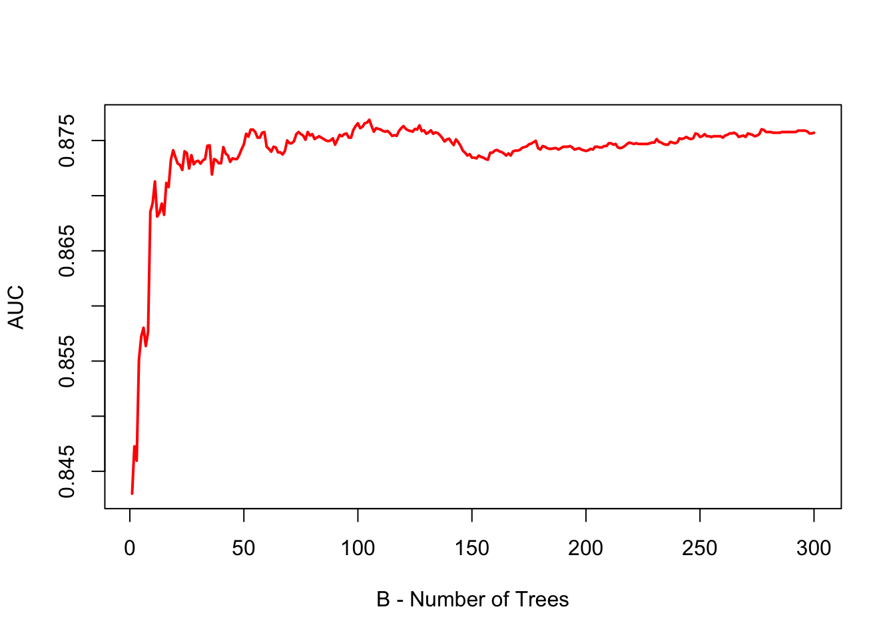
As shown by the plot, when B is large, the AUC (or error in regression) stabilizes, indicating that we do not need to perform extensive hyperparameter tuning for the number of trees in bagging. Simply, Bagging requires choosing a sufficiently large B, but no fine-tuning beyond that.14.1.1 Application with multiple splits
We can also use foreach and doParallel to parallelize and speed the process instead of doing the previous steps. Now, we will have multiple train-test splits and average the AUCs. We will use the rpart package for the trees and the ROCR package to calculate the AUC.
library(foreach)
library(doParallel)
no_cores <- detectCores() - 1
registerDoParallel(cores = no_cores)
B <- 100
AUC <- numeric(100) # Preallocate memory for speed
for (i in 1:100) {
set.seed(i)
ind <- sample(nrow(titanic3), nrow(titanic3) * 0.8)
train <- titanic3[ind, ]
test <- titanic3[-ind, ]
# Use foreach for the inner loop
phat2 <- foreach(b = 1:B, .combine = 'cbind') %dopar% {
set.seed(b) # Ensure reproducibility
idx <- sample(nrow(train), nrow(train), replace = TRUE)
dt <- train[idx, ]
cart_B <- rpart(survived ~ sex + age + pclass + sibsp + parch,
cp = 0, data = dt, method = "class") # unpruned
predict(cart_B, test, type = "prob")[, 2]
}
# Take the average
phat_f <- rowMeans(phat2)
# AUC
pred_rocr <- prediction(phat_f, test$survived)
auc_ROCR <- performance(pred_rocr, measure = "auc")
AUC[i] <- auc_ROCR@y.values[[1]]
}
stopImplicitCluster()Let’s plot AUC with its mean and 95% confidence interval.
# Plot AUC with its mean and 95% confidence interval
plot(AUC, col = "red",
xlab = "B - Number of trees",
lwd = 2)
abline(h = mean(AUC), col = "blue", lwd = 2)
abline(h = quantile(AUC, 0.025), col = "green", lwd = 2, lty = 2)
abline(h = quantile(AUC, 0.975), col = "green", lwd = 2, lty = 2)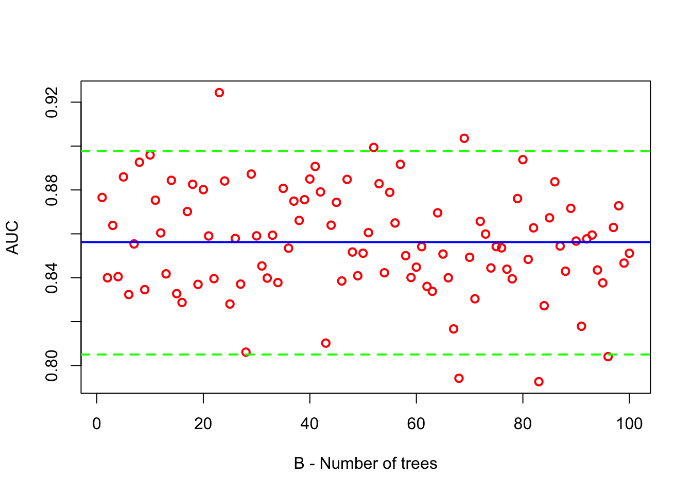
14.1.2 Tuning?
Bagging (Bootstrap AGGregatING) does not require the same level of hyperparameter tuning as some other machine learning models, such as selecting the number of layers in a neural network or the depth of individual trees in a random forest. The primary parameter in bagging is the number of bootstrap samples (or trees in the forest, B), which often does not need fine-tuning beyond ensuring it is sufficiently large. This characteristic makes bagging a very robust method with minimal setup requirements.
Regarding cross-validation, bagging inherently includes a form of it through the use of bootstrap samples. Each tree is trained on a random subset of the data (with replacement), making it unnecessary to use cross-validation to prevent overfitting or to estimate model accuracy reliably. The out-of-bag (OOB) error provides a handy estimate of prediction error (generalization error) without the need for a separate validation set or cross-validation, as the OOB samples act as a built-in test set for each tree.
Hence, instead of running two loops as we seen in the previous example, we can have one split and use the OOB error to estimate the generalization error.
14.1.3 Using Out-of-Bag (OOB) Error
Bagging provides a built-in error estimate without needing cross-validation. We use OOB samples to estimate the AUC.
df <- titanic3
B <- 100
pred <- matrix(NA, nrow(df), B)
for (i in 1:B) {
set.seed(i) # Ensure reproducibility
train_idx <- sample(nrow(df), nrow(df), replace = TRUE)
oob_idx <- setdiff(1:nrow(df), train_idx)
train <- df[train_idx, ]
oob <- df[oob_idx, ]
cart_B <- rpart(survived ~ sex + age + pclass + sibsp + parch,
cp = 0, data = train, method = "class") # unpruned
pred[oob_idx, i] <- predict(cart_B, oob, type = "prob")[, 2]
}
phat_f <- rowMeans(pred, na.rm = TRUE)
pred_rocr <- prediction(phat_f, df$survived)
auc_ROCR <- performance(pred_rocr, measure = "auc")
auc_ROCR@y.values[[1]]## [1] 0.8515995It is important to note that the OOB error is a good estimate of the generalization error, but it is not perfect. The OOB error is based on the samples that were not used to train the model, but it is still an estimate and may not be as accurate as a separate validation set or cross-validation. However, it is a useful metric for quickly estimating the generalization error without the need for additional data or computational resources. If B is large enough, the OOB error will be a good estimate of the generalization error. Pay attention to the pred matrix. It is a matrix of predicted probabilities for each tree. We take the average of these probabilities to get the final prediction.
14.1.4 OOB error rate
Here, we will use the OOB samples to estimate the error rate, which is the proportion of misclassified observations. Although we show the classification error as calculated by 1 - accuracy, it can also be shown separately for each classes. Here, instead of AUC, we can compute the classification error based on OOB predictions.
df <- titanic3
B <- 100
n <- nrow(df)
pred <- matrix(NA, n, B)
for (i in 1:B) {
set.seed(i)
train_idx <- sample(n, replace = TRUE)
oob_idx <- setdiff(1:n, train_idx)
train <- df[train_idx, ]
oob <- df[oob_idx, ]
# Train model on bootstrap sample
cart_B <- rpart(survived ~ sex + age + pclass + sibsp + parch,
cp = 0, data = train, method = "class")
# Predict for OOB observations
oob_pred <- predict(cart_B, oob, type = "class")
oob_pred01 <- ifelse(oob_pred == 1, 1, 0)
# Store OOB predictions
pred[oob_idx, i] <- oob_pred01
}
# Calculate OOB error for each tree
oob_err <- numeric(B)
for (j in 1:ncol(pred)) {
ind <- which(!is.na(pred[ ,j]))
oob_err[j] <- 1 - mean(pred[ind, j] == df$survived[ind])
}
oob_error <- mean(oob_err, na.rm = TRUE)
oob_error # This is the overall OOB error rate## [1] 0.2151985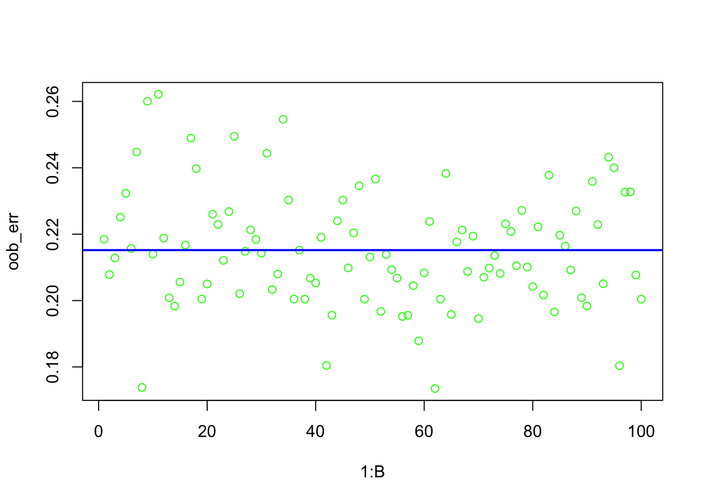
Bagging is a powerful ensemble method that significantly improves the performance of decision trees by addressing their high variance. It builds multiple models from different bootstrap samples of the training data and then combines their predictions by averaging (for regression) or voting (for classification). Bagging is a robust method with minimal setup requirements and does not require the same level of hyperparameter tuning as some other machine learning models. The primary parameter in bagging is the number of bootstrap samples (or trees in the forest, B), which often does not need fine-tuning beyond ensuring it is sufficiently large. Bagging inherently includes a form of cross-validation through the use of bootstrap samples, and the out-of-bag (OOB) error provides a handy estimate of prediction error (generalization error) without the need for a separate validation set or cross-validation.
Bagging reduces the variance of high-variance base learners (e.g., decision trees or kNN) by averaging (for regression) or voting (for classification). This significantly stabilizes predictions compared to using a single model. However, if the individual trees are highly correlated, the reduction in variance achieved by bagging is diminished, limiting its effectiveness in improving predictive performance. Moreover, Bagging can be computationally expensive as it requires training multiple models, increasing processing time and memory usage. Next, we explore an even more refined ensemble method called random forests.
14.2 Random Forest
We have seen that bagging is a method of combining multiple models to improve generalization. It works by training the same model type on multiple bootstrap samples—each of the same size as the original dataset and drawn with replacement. This means some observations appear multiple times while others may be excluded. By averaging the predictions of these independent models trained on slightly different data distributions, bagging reduces variance.
The Random Forest algorithm extends bagging by introducing random feature selection. In addition to training each model on a different bootstrap sample, Random Forest randomly selects a subset of features at each split when constructing decision trees. This additional randomness helps decorrelate the trees, further improving predictive performance compared to standard bagging.”
Random forest is an ensemble learning algorithm designed to improve predictive performance by combining many decision trees. For regression, it works with a dataset \(\{(X_i, Y_i)\}_{i=1}^N\), where \(X_i \in \mathbb{R}^p\) are predictor variables and \(Y_i \in \mathbb{R}\) is a continuous response. Each tree contributes a prediction, and the final result is obtained by averaging across all trees, reducing variance and improving generalization.
The construction of a random forest begins with bootstrap sampling. For each of the \(B\) trees, a new training set \(S_b\) is generated by sampling with replacement from the original dataset:
\[\begin{equation} S_b = \{ (X_i, Y_i) \}, \quad i \sim \text{Uniform}(1, N) \end{equation}\]
This means each tree is trained on roughly 63% of the data, while the remaining 37%—the out-of-bag (OOB) observations—are held out and used later to estimate prediction error.
Each tree is built by recursively splitting the data. Unlike traditional decision trees, random forests introduce randomness by considering only a random subset of \(m\) predictors (where \(m = \lfloor \sqrt{p} \rfloor\), rounded down, used by default for regression) at each split, instead of all \(p\) predictors. At a given node \(t\), the algorithm selects the split that minimizes mean squared error (MSE):
\[\begin{equation} \Delta \text{MSE} = \text{MSE}(t) - \left( \frac{N_L}{N_t} \text{MSE}(L) + \frac{N_R}{N_t} \text{MSE}(R) \right) \end{equation}\]
where \(L\) and \(R\) are the left and right child nodes, and \(N_t, N_L, N_R\) are their respective sample sizes.
Unlike single decision trees, which often require pruning to avoid overfitting, random forests intentionally grow each tree fully. The rationale is that overfitting in individual trees is addressed not by simplification, but by averaging across many high-variance trees. In single trees, pruning is used to control the bias-variance tradeoff. In contrast, random forests manage variance through aggregation, making pruning unnecessary. Each tree may overfit its bootstrap sample, but the ensemble average tends to generalize well.
The final prediction for a new observation \(x\) is simply the average of predictions from all \(B\) trees:
\[\begin{equation} \hat{Y}_{\text{RF}}(x) = \frac{1}{B} \sum_{b=1}^B T_b(x) \end{equation}\]
where \(T_b(x)\) is the prediction from the \(b\)-th tree. This averaging ensures a stable prediction, typically with lower variance than any single tree.
Another important feature of random forests is the use of Out-of-Bag (OOB) error as an internal validation method. Since about 37% of the training data is excluded from each tree’s bootstrap sample, those OOB observations can serve as a test set for that tree. For each data point \(i\), its OOB prediction \(\hat{Y}_i^{\text{OOB}}\) is the average of predictions from trees where \(i\) was not included in \(S_b\). The overall OOB mean squared error is computed as:
\[\begin{equation} \text{OOB MSE} = \frac{1}{N} \sum_{i=1}^{N} (Y_i - \hat{Y}_i^{\text{OOB}})^2 \end{equation}\]
This built-in estimate acts like cross-validation and is a key reason why random forests do not require separate cross-validation. The OOB error serves as a reliable measure of test error, making model evaluation more efficient.
For classification, the structure is similar, but the prediction target \(Y_i\) is categorical. At each node, the split is chosen to maximize class purity—typically using the Gini index. Each tree produces a class prediction, and the final forest prediction is the majority vote:
\[\begin{equation} \hat{C}_{\text{RF}}(x) = \text{mode} \{ T_1(x), T_2(x), \dots, T_B(x) \} \end{equation}\]
The OOB classification error is calculated by comparing the true class label of each observation to its OOB-predicted class:
\[\begin{equation} \text{OOB Error Rate} = \frac{1}{N} \sum_{i=1}^N \mathbb{I} \left( Y_i \ne \hat{C}_i^{\text{OOB}} \right) \end{equation}\]
where \(\hat{C}_i^{\text{OOB}}\) is the predicted class for observation \(i\) using only trees where \(i\) was OOB.
Random forests offer several built-in advantages that make them powerful tools for predictive modeling. One of the most practical features is the use of out-of-bag (OOB) error to estimate generalization error. Since each tree in the forest is trained on a bootstrap sample that leaves out some part of data (roughly 37% of the data in randomforest package) those unused observations can serve as a test set for that tree. By aggregating these out-of-sample predictions across all trees, the model provides an internal and unbiased estimate of its prediction error—eliminating the need for a separate validation set or cross-validation.
Another key advantage of random forests is their ability to assess variable importance. During training, the algorithm tracks how much each predictor contributes to reducing impurity at decision nodes across the forest. By averaging these reductions, random forests highlight which features are most influential in driving predictions. This built-in diagnostic helps researchers and practitioners interpret models, detect relevant variables, and guide feature selection or further analysis.
Finally, predictions from a random forest reflect its ensemble nature. In regression tasks, each tree outputs a numeric prediction, and the forest returns the average of these values, yielding a stable and smooth estimate. In classification, each tree casts a vote for a class label, and the majority vote determines the final prediction. This aggregation makes random forests robust against noise and overfitting, while still capturing complex patterns in the data.
14.2.1 Random Forest-like Variable Selection
To incorporate a Random Forest twist into our bagging code, which originally applies a bagging approach using CART, we need to introduce variable selection into the training of each tree. Random Forest improves upon bagging by not only using bootstrap samples but also by randomly selecting a subset of the variables (features) for splitting at each node within a tree. This approach increases the diversity among the trees in the ensemble, which can lead to better performance.
Here is how we can adjust our code to include a Random Forest-like variable selection:
Variable Subset Selection: At each split in the construction of a tree, randomly select a subset of the variables to consider. The number of variables, often denoted as \(m\), is a hyperparameter. A common choice for classification problems is \(m=\sqrt{p}\), where \(p\) is the total number of variables. For regression problems, a common choice is \(m=p/3\). As you can see if \(m=p\), then we are back to the original bagging algorithm.
Implementation Adjustment: Since the
rpartfunction in R does not directly support random selection of variables for each split, we typically use a Random Forest package likerandomForestorranger. However, to keep the spirit of our original implementation and manually introduce randomness in variable selection for now, we can simulate this aspect by randomly selecting a subset of variables to include in the model for each tree.
Let’s see how we can adjust our code to include this Random Forest-like variable selection instead of using package.
To begin, we load the necessary libraries, clean up the environment, and handle missing values in the Titanic dataset. We then subset the data to include only relevant predictors.
# clean up
rm(list = ls())
# Load libraries
library(randomForest)
library(ROCR)
library(PASWR)
library(rpart)
library(rpart.plot)
library(caret)
library(ggplot2)
# NA handling
data(titanic3)
colSums(is.na(titanic3)) # Check for missing values## pclass survived name sex age sibsp parch ticket
## 0 0 0 0 263 0 0 0
## fare cabin embarked boat body home.dest
## 1 0 0 0 1188 0To manually implement variable selection similar to Random Forest, we build multiple decision trees, randomly selecting a subset of features at each iteration. The number of selected features follows the rule of \(\sqrt p\) where \(p\)is the number of predictors. Each tree is trained on a bootstrap sample, and predictions are made on out-of-bag (OOB) observations.
B <- 1000
n <- nrow(df)
p <- sqrt(ncol(df) - 1) # One column for the response variable
pred <- matrix(NA, nrow = n, ncol = B)
for (i in 1:B) {
set.seed(i) # Ensure reproducibility
train_idx <- sample(n, n, replace = TRUE)
oob_idx <- setdiff(1:n, train_idx)
# Randomly select a subset of variables
vars <- sample(colnames(df[, -which(colnames(df) == "survived")]),
size = ceiling(p), replace = FALSE)
formula <- as.formula(paste("survived ~", paste(vars, collapse = "+")))
train <- df[train_idx, ]
oob <- df[oob_idx, ]
cart_B <- rpart(formula, data = train, method = "class", cp = 0) # unpruned
pred[oob_idx, i] <- predict(cart_B, oob, type = "prob")[, 2]
}
# Calculate OOB AUC
phat_f <- rowMeans(pred, na.rm = TRUE, dims = 1)
pred_rocr <- prediction(phat_f, df$survived)
auc_ROCR <- performance(pred_rocr, measure = "auc")
auc_ROCR@y.values[[1]]## [1] 0.8473894This approach manually introduces feature randomness, which is the key difference between Random Forest and standard bagging. While not the most efficient way to implement Random Forest, it helps in understanding the underlying mechanism.
14.3 Implementing Random Forest in R
Instead of manually implementing the process, we can use the randomForest package, which automates feature selection, tree construction, and aggregation.
In our earlier examples, we manually applied bagging to single trees by rpart. We used the rpart’s internal CV to find the “optimal depth” of the tree. In other words, we did not grow the tree to the maximum possible terminal nodes or pruned it later. Now we will use randomForest for Titanic first, then for Hitters. Let’s summarize what we know about randomForest to start with:
- Unlike
rpart,randomForestdoes not have an internal Cross Validation process. - The number of trees, which we denoted as B in
rpart, is nowntreeand has to be set by the user. Here is the definition: “Number of trees to grow. This should not be set to too small a number, to ensure that every input row gets predicted at least a few times”. - Maximum number of terminal nodes trees in the forest can have,
maxnodes. The maximum can be set to the number observations in our train set, in which case, each tree grows to its full extend. If not given, trees are grown to the maximum possible (subject to limits bynodesize, which is Minimum size of terminal nodes. The default values are different for classification (1) and regression (5)). - Number of variables randomly sampled as candidates at each split,
mtry. There is no consensus whether it is or should be a hyperparameter in practice. If it is not set, the default values are for classification, \(\operatorname{sqrt}(\mathrm{p})\) where \(\mathrm{p}\) is number of variables in \(\mathrm{x}\) and for regression \(\mathrm{p} / 3\).
14.3.1 Building a Random Forest Model on Titanic Data
Let’s see how we can use randomForest to build a Random Forest model for the Titanic dataset.
df$survived <- as.factor(titanic3$survived)
df <- df[complete.cases(df), ] #We can also handle it within RF
set.seed(42) # for reproducibility
#rf_model <- randomForest(survived ~ ., data = df, na.action = na.omit, ntree = 1000)
rf_model <- randomForest(survived ~ ., data = df, ntree = 1000)
# Print the model
rf_model##
## Call:
## randomForest(formula = survived ~ ., data = df, ntree = 1000)
## Type of random forest: classification
## Number of trees: 1000
## No. of variables tried at each split: 2
##
## OOB estimate of error rate: 20.46%
## Confusion matrix:
## 0 1 class.error
## 0 563 56 0.0904685
## 1 158 269 0.3700234## [1] "call" "type" "predicted" "err.rate"
## [5] "confusion" "votes" "oob.times" "classes"
## [9] "importance" "importanceSD" "localImportance" "proximity"
## [13] "ntree" "mtry" "forest" "y"
## [17] "test" "inbag" "terms"14.3.1.1 Out-of-Bag (OOB) Error and Performance Evaluation
We can see the development of the model, the number of trees, the number of variables randomly sampled as candidates at each split, and the OOB error. The OOB error is a built-in measure of model performance. It is computed by predicting OOB samples for each tree and averaging the errors across all trees.
## OOB 0 1
## [1,] 0.2423398 0.1690141 0.3493151
## [2,] 0.2416667 0.1637931 0.3492063
## [3,] 0.2513369 0.1378505 0.4031250
## [4,] 0.2416185 0.1428571 0.3795014
## [5,] 0.2353579 0.1322160 0.3792208
## [6,] 0.2317328 0.1196429 0.3894472## OOB 0 1
## [995,] 0.2055449 0.0904685 0.3723653
## [996,] 0.2045889 0.0904685 0.3700234
## [997,] 0.2045889 0.0904685 0.3700234
## [998,] 0.2045889 0.0904685 0.3700234
## [999,] 0.2045889 0.0904685 0.3700234
## [1000,] 0.2045889 0.0904685 0.3700234We can plot the OOB error rate to see how it changes as the number of trees increases.
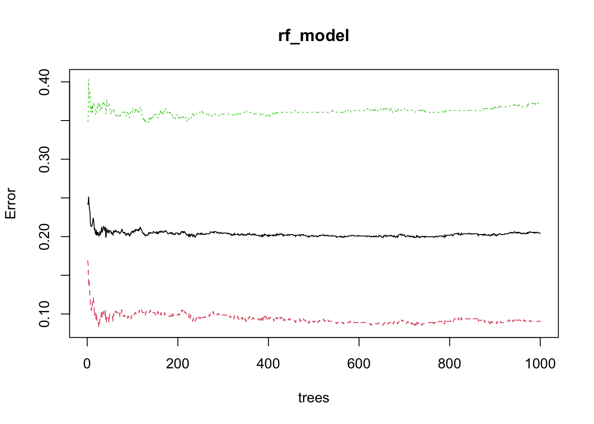
Green line is the OOB error rate for the first class, and the red line is the OOB error rate for the second class. The blue line is the overall OOB error rate.
14.3.1.2 OOB Predictions
We can use the predict function to get the OOB predictions from the model.
## [1] 1046##
## 0 1
## 721 325##
## 0 1
## 619 427##
## 0 1
## 0 563 158
## 1 56 269# let's change the order of the table
cm <- table(rf_model$predicted, df$survived)
cm <- cm[c(2, 1), c(2, 1)]
cm##
## 1 0
## 1 269 56
## 0 158 563## Confusion Matrix and Statistics
##
## Reference
## Prediction 0 1
## 0 563 158
## 1 56 269
##
## Accuracy : 0.7954
## 95% CI : (0.7697, 0.8195)
## No Information Rate : 0.5918
## P-Value [Acc > NIR] : < 2.2e-16
##
## Kappa : 0.5603
##
## Mcnemar's Test P-Value : 5.048e-12
##
## Sensitivity : 0.6300
## Specificity : 0.9095
## Pos Pred Value : 0.8277
## Neg Pred Value : 0.7809
## Prevalence : 0.4082
## Detection Rate : 0.2572
## Detection Prevalence : 0.3107
## Balanced Accuracy : 0.7698
##
## 'Positive' Class : 1
## oob.times: This records for each data point in the dataset the number of times it was not included in the bootstrap sample for a tree (i.e., the number of times it was in the OOB sample). This information can be useful for understanding how evenly the OOB samples are distributed across the dataset and can also play a role in the calculation of the OOB error estimate.
## [1] 378 360 364 369 343 39914.3.2 AUC
In the context of Random Forest and other ensemble learning methods, votes refers to the predictions made by the individual trees in the forest for each observation in the dataset. When you train a Random Forest model for classification tasks, it builds multiple decision trees. Each of these trees makes its own prediction for each observation. The votes are essentially these predictions; for a given observation, each tree votes for a particular class. You can think of the votes as a matrix where each row corresponds to an observation and each column corresponds to a tree in the forest. The value in each cell is the class that the corresponding tree voted for.
The final prediction for each observation is determined by a majority vote across all trees in the forest. This means the class that receives the most votes from the trees is chosen as the final prediction for each observation. This process is a key aspect of how Random Forest improves upon the performance of individual decision trees. By aggregating the predictions (votes) of numerous trees, Random Forest can reduce the variance of the predictions, leading to better generalization on unseen data.
For example, in a binary classification problem, if you have a Random Forest consisting of 100 trees and you are making a prediction for a single observation, it is possible that:
- 60 trees predict the observation belongs to Class 0,
- 40 trees predict the observation belongs to Class 1.
In this case, since Class 0 receives more votes (60 vs. 40), votes will 0.6 for Class 0 and 0.4 for Class 1. The final prediction for this observation will be Class 0.
## [1] 1046 2## 0 1
## 1 0.02116402 0.97883598
## 2 0.21388889 0.78611111
## 3 0.06868132 0.93131868
## 4 0.52574526 0.47425474
## 5 0.01457726 0.98542274
## 6 0.92230576 0.07769424Since these are phat values, we can calculate AUC as follows:
pred_rocr <- prediction(rf_model$votes[, 2], df$survived)
auc_ROCR <- performance(pred_rocr, measure = "auc")
auc_ROCR@y.values[[1]]## [1] 0.8466288# And ROC curve
plot(performance(pred_rocr, measure = "tpr", x.measure = "fpr"),
col = "blue", lwd = 2, main = "ROC Curve")
abline(a = 0, b = 1, lwd = 2, lty = 2, col = "red") 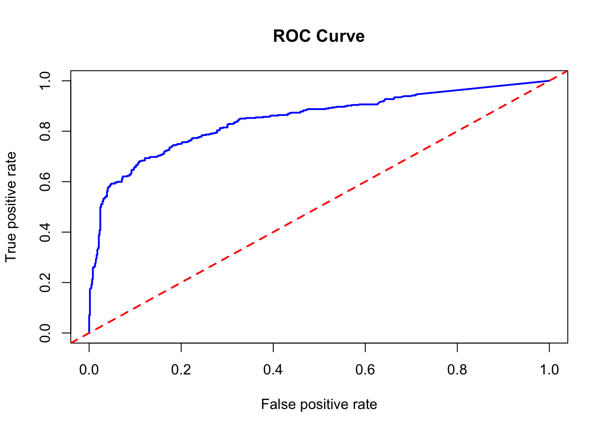
14.3.2.1 OOB AUC or Test AUC?
In the context of using Random Forest for classification tasks, Out-of-Bag (OOB) error estimation is a convenient feature. The OOB error is the average error for each training observation calculated using only the trees that did not have this observation in their bootstrap sample. This method is an unbiased estimate of the model error as if it were computed on a test set.
The OOB error estimation can be a good indicator of the performance of the model when the number of trees is sufficiently large. Therefore, we can use the OOB error as an estimate of the performance of the model without having to split the data into a separate training and test set. This is particularly useful when you have a limited amount of data, or when computational resources are constrained.
However, it is important to note that while the OOB error is a good estimate of performance, it might not always perfectly match the error you would observe on a completely separate test set. The true test of the performance of the model is how well it generalizes to unseen data. Therefore, if you have enough data, it is still considered a best practice to set aside a test set and evaluate the performance of your model on it.
For AUC, which is a measure of the ability of the model to discriminate between the positive and negative classes, the randomForest package does not directly provide an OOB estimate of AUC. However, you can calculate it manually by using the OOB predictions to compute the AUC with a package like pROC or ROCR.
Here is another way to compute OOB AUC with the randomForest package:
library(pROC)
set.seed(42) # for reproducibility
rf_model <- randomForest(survived ~ ., data = df, ntree = 1000,
keep.inbag = TRUE, oob.probs = TRUE)
# Extracting OOB votes (Assuming the 2nd column corresponds to the positive class)
oob_probs <- rf_model$votes[, 2]
# Compute OOB AUC
roc_curve <- roc(df$survived, oob_probs)
auc(roc_curve)## Area under the curve: 0.8466Now we will try AUC on the test set.
n = nrow(df)
AUC <- rep(NA, 50)
for (i in 1:50) {
set.seed(i)
train_idx <- sample(n, n, replace = TRUE)
test_idx <- setdiff(1:n, train_idx)
train <- df[train_idx, ]
test <- df[test_idx, ]
rf_model <- randomForest(survived ~ ., data = train, ntree = 1000)
phat <- predict(rf_model, test, type = "prob")[, 2]
roc_curve <- roc(test$survived, phat)
AUC[i] <- auc(roc_curve)
}
plot(AUC, pch = 19, col = "blue", xlab = "Iteration",
ylab = "AUC", main = "AUC on Test Set")
abline(h = mean(AUC), lwd = 2, lty = 2, col = "red") 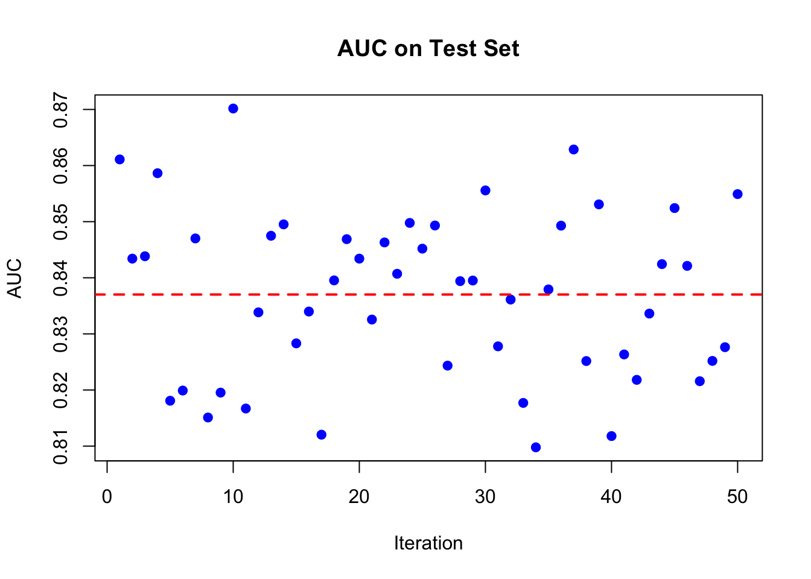
Multicore version of the same code:
library(doParallel)
num_cores <- detectCores() - 1
cl <- makeCluster(num_cores)
registerDoParallel(cl)
n = nrow(df)
AUC <- foreach(i = 1:100, .combine = c,
.packages = c('randomForest', 'pROC')) %dopar% {
set.seed(i)
train_idx <- sample(n, n, replace = TRUE)
test_idx <- setdiff(1:n, train_idx)
train <- df[train_idx, ]
test <- df[test_idx, ]
rf_model <- randomForest(survived ~ ., data = train, ntree = 1000)
phat <- predict(rf_model, test, type = "prob")[, 2]
roc_curve <- roc(test$survived, phat)
auc(roc_curve)
}
stopCluster(cl)
plot(AUC, pch = 19, col = "blue", xlab = "Iteration",
ylab = "AUC", main = "AUC on Test Set")
abline(h = mean(AUC), lwd = 2, lty = 2, col = "red")
abline(h = quantile(AUC, 0.025), lwd = 2, lty = 2, col = "green")
abline(h = quantile(AUC, 0.975), lwd = 2, lty = 2, col = "green") 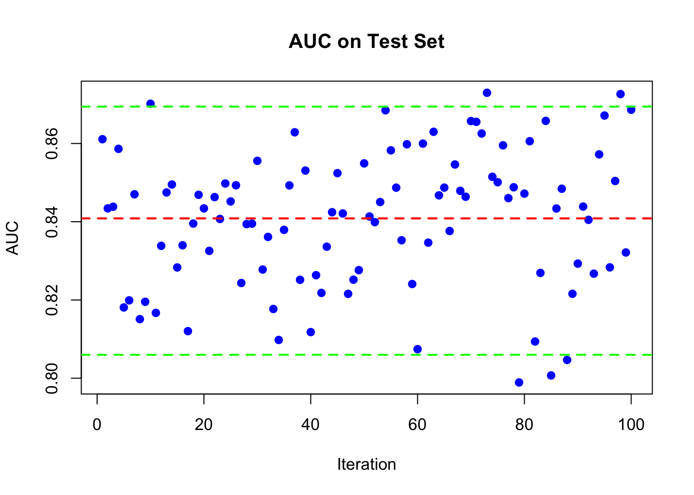
Or
library(randomForest)
library(pROC)
library(parallel)
n <- nrow(df)
AUC <- rep(NA, 100)
# Define the function to be applied in each iteration
iteration_function <- function(i, df) {
set.seed(i)
n <- nrow(df)
train_idx <- sample(n, n, replace = TRUE)
test_idx <- setdiff(1:n, train_idx)
train <- df[train_idx, ]
test <- df[test_idx, ]
rf_model <- randomForest(survived ~ ., data = train, ntree = 1000)
phat <- predict(rf_model, test, type = "prob")[, 2]
roc_curve <- roc(test$survived, phat)
auc_value <- auc(roc_curve)
return(auc_value)
}
no_cores <- detectCores() - 1
# Use mclapply to parallelize
AUC <- mclapply(1:100, iteration_function, df = df, mc.cores = no_cores)
AUC <- unlist(AUC)
# Plot
plot(AUC, pch = 19, col = "blue", xlab = "Iteration",
ylab = "AUC", main = "AUC on Test Set")
abline(h = mean(AUC), lwd = 2, lty = 2, col = "red")
abline(h = quantile(AUC, 0.025), lwd = 2, lty = 2, col = "green")
abline(h = quantile(AUC, 0.975), lwd = 2, lty = 2, col = "green") 
14.3.3 Regression: Hitters
Now let’s see how we can use randomForest to build a Random Forest model for the Hitters dataset.
library(ISLR)
dfr <- data(Hitters)
dfr <- na.omit(Hitters)
dfr$Salary <- log(dfr$Salary)
set.seed(42) # for reproducibility
rf_model_reg <- randomForest(Salary ~ ., data = dfr, ntree = 1000)
# Print the model
rf_model_reg##
## Call:
## randomForest(formula = Salary ~ ., data = dfr, ntree = 1000)
## Type of random forest: regression
## Number of trees: 1000
## No. of variables tried at each split: 6
##
## Mean of squared residuals: 0.1782892
## % Var explained: 77.36## [1] 0.2860233 0.2522324 0.2576919 0.2671088 0.2551585 0.2548879## [1] 0.1784544 0.1784147 0.1783455 0.1783773 0.1782916 0.1782892And the plot
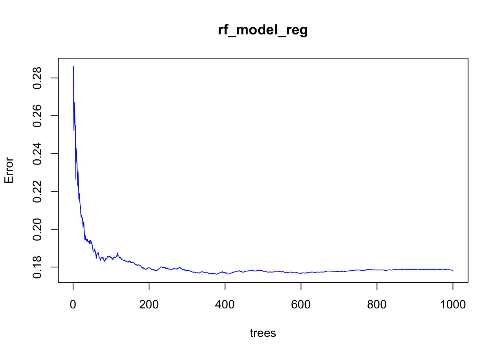
14.3.3.1 Benchmarking
We can use linear regression, decision trees, and Random Forest to predict the Salary of baseball players in the Hitters dataset. We can then compare the performance of these models using the RMSE metric.
library(caret)
# Linear regression
lm_model <- lm(Salary ~ ., data = dfr)
lm_pred <- predict(lm_model, newdata = dfr)
lm_rmse <- sqrt(mean((dfr$Salary - lm_pred)^2))
# Decision trees
library(rpart)
tree_model <- rpart(Salary ~ ., data = dfr)
tree_pred <- predict(tree_model, newdata = dfr)
tree_rmse <- sqrt(mean((dfr$Salary - tree_pred)^2))
# Bagging
set.seed(42) # for reproducibility
bag_model <- randomForest(Salary ~ ., data = dfr, ntree = 1000, mtry = ncol(dfr) - 1)
bag_pred <- predict(bag_model, newdata = dfr)
bag_rmse <- sqrt(mean((dfr$Salary - bag_pred)^2))
# Put the RMSE values in a data frame
rmse_df <- data.frame(Model = c("Linear Regression", "Decision Trees", "bagging"),
RMSE = c(lm_rmse, tree_rmse, bag_rmse))
rmse_df## Model RMSE
## 1 Linear Regression 0.5896648
## 2 Decision Trees 0.4198185
## 3 bagging 0.178733714.3.4 Importance of Variables
When working with Random Forest models, particularly in R using the randomForest package, you encounter options to evaluate the importance of variables (features) in making predictions. The concepts of importance and localImportance are central to understanding how your model evaluates the significance of different predictors, but they serve different purposes and provide insights at different levels.
importance
- Global Measure: This option, when enabled (by setting
importance=TRUE), calculates global importance scores for each variable in the dataset. These scores are meant to reflect the overall contribution of each variable to the prediction of the model accuracy across the entire dataset. - How It Works: The importance of a variable is usually assessed in terms of the decrease in model accuracy or increase in node impurity when the values of the variable are permuted across out-of-bag (OOB) samples. A larger decrease in accuracy or increase in impurity indicates a more important variable.
- Purpose: The global importance scores are useful for feature selection, understanding which variables contribute most to the predictions of the model, and guiding model refinement and interpretation.
localImportance
- Individual Measure: The
localImportanceoption calculates importance scores for each variable for each individual observation. This means you get a matrix where each row represents an observation, and each column represents a variable, with the values indicating the importance of that variable for predicting that particular observation. - How It Works: This is calculated similarly to global importance but on a per-observation basis. It can show how the importance of variables varies across individual predictions, which can be particularly useful for detailed analyses of model behavior and understanding variable contributions in specific cases.
- Purpose: Local importance scores can be invaluable for detailed diagnostics, such as explaining model predictions for individual instances or identifying why certain observations are outliers or misclassified. They provide a granular view of the decision-making process of the model.
14.3.4.1 Global Importance
Here are the key points we cover:
Mean Decrease in Impurity (MDI)
This method computes importance scores based on how much each feature contributes to homogeneity in nodes across all trees. For classification, this is often measured by the Gini impurity, and for regression, it can be measured by the variance reduction.
Imagine we have a RandomForest model trained on a dataset with 1000 samples, and we are looking at how the feature ’ \(\mathbf{X} \mathbf{1}\) ’ contributes to node purity in one of the trees.
- Splitting on ‘X1’ in a Node: Suppose ’ \(\mathbf{X 1}\) ’ is used to split a node that contains 600 of the 1000 samples. The split divides the node into two child nodes:
- Child Node A with 400 samples
- Child Node B with 200 samples
- Calculating Impurity Decrease: Assume the impurity (e.g., Gini impurity for classification) of the parent node before the split is 0.5. After the split:
- Child Node A has an impurity of 0.2
- Child Node B has an impurity of 0.1 The weighted impurity decrease due to the split on ’ \(\mathbf{X} 1^{\text {' }}\) is calculated by considering the impurit) decrease in each child node, weighted by the proportion of samples in each node relative to the parent node or the entire dataset.
- Weight Calculation: The weight for the decrease in impurity contributed by the split on ’ \(\mathbf{X 1}{ }^{\text {' }}\) would consider the proportion of total samples that went through the split. In this case, since the node being split had 600 samples out of 1000 in the dataset, the weight of this split in the overall MDI calculation for ’ \(X 1\) ’ would be \(0.6(600 / 1000)\).
- Weighted Impurity Decrease:
- The decrease in impurity for each child node is calculated. Let’s say the decrease for Node A is 0.3 and for Node B is 0.4.
- The total decrease in impurity from the split is the sum of the decreases for each child, weighted by their proportion of samples: \(\left(0.3 \times \frac{400}{600}\right)+\left(0.4 \times \frac{200}{600}\right)\).
- This weighted decrease is then further weighted by the proportion of samples in the parent node relative to the entire dataset: \(W\) eightedDecrease \(\times \frac{600}{1000}\).
- Aggregation: The weighted decrease in impurity from all splits on ’ \(\mathbf{x} \mathbf{1}^{\text {' }}\) across all trees in the forest is aggregated to compute the MDI for ’ \(\mathbf{X} \mathbf{1}\) ’.
Mean Decrease in Accuracy (MDA)
The Mean Decrease Accuracy (MDA), also known as permutation importance, evaluates the importance of a feature based on how the permutation (random shuffling) of the feature values across the dataset affects the accuracy of the model. Unlike MDI, MDA does not rely on the internal structure of the model but rather on the performance of the model with altered data. Let’s walk through an example of how MDA is calculated.
- First, we assess the accuracy of the model on the validation dataset. Assume the model achieves an accuracy of \(80 \%\).
- We then permute the values of the
Farefeature in the validation dataset. This means theFarevalue for each passenger is randomly shuffled, breaking the original relationship betweenFareand survival outcomes. - With the
Farefeature permuted, we reassess the accuracy of the model on this altered dataset. Let’s say the accuracy drops to \(70 \%\). - The decrease in accuracy, in this case, is the difference between the original accuracy ( \(80 \%\) ) and the accuracy after permuting
Fare\((70 \%)\), which is 10 percentage points. - To get a reliable estimate of
Fares importance, we repeat the permutation process multiple times, each time recording the decrease in accuracy. Assume we do this five times, and we observe the following decreases in accuracy: \(10 \%, 9 \%, 11 \%, 8 \%\), and \(12 \%\). - Calculating MDA: The Mean Decrease in Accuracy (MDA) for ‘Fare’ is the average of these decreases, which would be \(\frac{10 \%+9 \%+11 \%+8 \%+12 \%}{5}=10 \%\). This means that, on average, permuting the ‘Fare’ values results in a 10% decrease in the accuracy of the model.
Points to consider
- Variable Importance Plots: These plots visually show the importance of each feature. Higher values indicate more important predictors. This can help in understanding which features are driving the predictions and possibly in feature selection for simplifying the model.
- Built-in Feature: Most Random Forest implementations, including the R randomForest package, have built-in functions to calculate and report feature importance. This is accessible via the
importance()function - OOB Samples for Importance: Random Forests can use out-of-bag (OOB) samples to estimate feature importance. The accuracy is measured on the OOB samples for each tree, then the values for a particular feature are permuted in the OOB samples and the accuracy is measured again. The drop in accuracy is a measure of importance of the features.
- Bias in Importance Measures: It is important to note that some methods of calculating importance can be biased, particularly in the presence of categorical variables with different levels or features that vary in scale or units. Permutation importance can sometimes be less biased in this regard.
- Model Interpretation: Even though Random Forests are considered “black box” models due to their complexity, importance scores provide a means to interpret the model by identifying which features are most influential in making predictions.
Examples
# Train the Random Forest model
rf_model <- randomForest(survived ~ ., data = df, ntree = 500, importance = TRUE)
importance(rf_model)## 0 1 MeanDecreaseAccuracy MeanDecreaseGini
## sex 67.04451 101.167267 99.01523 133.87192
## age 23.08417 17.321865 32.21119 63.12850
## pclass 25.92289 39.133413 41.68083 52.38648
## sibsp 27.27390 -8.412601 18.82066 19.50711
## parch 15.68115 1.387492 16.32029 16.95344MeanDecreaseAccuracy: This column shows the decrease in model accuracy caused by excluding a variable from the model. A larger value indicates a more important variable because its absence significantly reduces model accuracy.
MeanDecreaseGini: This column is related to classification problems and indicates the decrease in node impurity from splits on a variable, averaged over all trees. The Gini impurity is a measure of how often a randomly chosen element from the set would be incorrectly labeled if it was randomly labeled according to the distribution of labels in the subset. The greater the decrease in the Gini impurity, the greater the importance of the variable.
The initial columns 0 and 1 in the output from the importance() function in the randomForest package are class-specific measures of variable importance for classification problems. In the context of a binary classification problem, like predicting survival on the Titanic, ‘0’ corresponds to the importance of the variable for predicting the ‘0’ class (not survived), and ‘1’ corresponds to the importance of the variable for predicting the ‘1’ class (survived). These measures are calculated by permuting the values of the variable in the out-of-bag (OOB) samples and measuring the resulting increase in prediction error rate. The higher the value, the more important the variable is for predicting that particular class.
nvar <- nrow(rf_model$importance)
cols <- rainbow(nvar)
varImpPlot(rf_model, type = 1, main = "Variable Importance Plot",col = cols)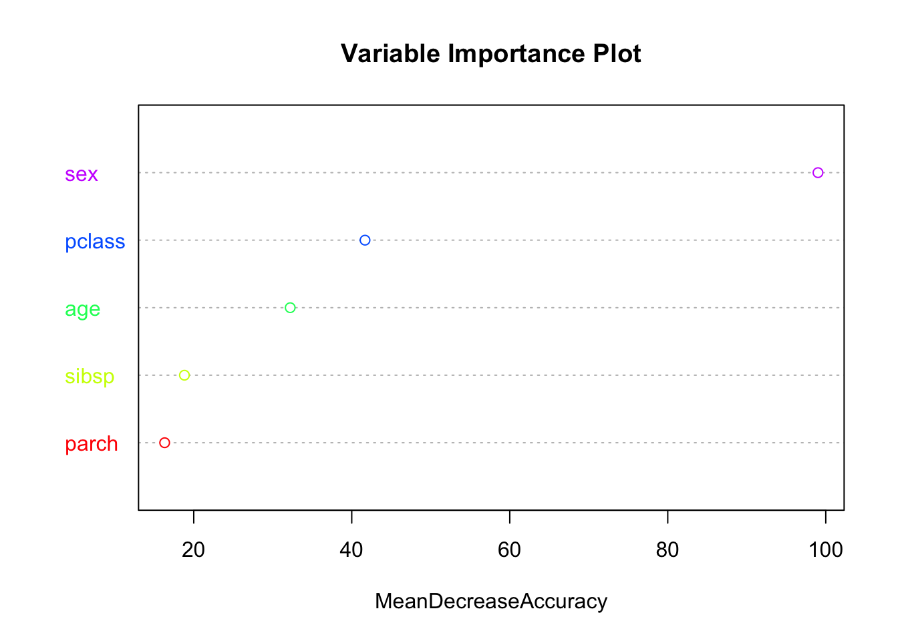
# Better
library(ggplot2)
# prepare data
importance_data <- importance(rf_model)
importance_df <- as.data.frame(importance_data)
importance_df$Variable <- rownames(importance_df)
# generate a rainbow palette
nvar <- nrow(importance_df)
cols2 <- rainbow(nvar)
# plot with each variable its own colour
ggplot(importance_df,
aes(x = reorder(Variable, MeanDecreaseGini),
y = MeanDecreaseGini,
fill = Variable)) +
geom_col() +
coord_flip() +
scale_fill_manual(values = cols2, guide = FALSE) +
theme_minimal() +
labs(
title = "Variable Importance Plot",
x = "Variable",
y = "Mean Decrease in Gini"
)## Warning: The `guide` argument in `scale_*()` cannot be `FALSE`. This was deprecated in
## ggplot2 3.3.4.
## ℹ Please use "none" instead.
## This warning is displayed once every 8 hours.
## Call `lifecycle::last_lifecycle_warnings()` to see where this warning was
## generated.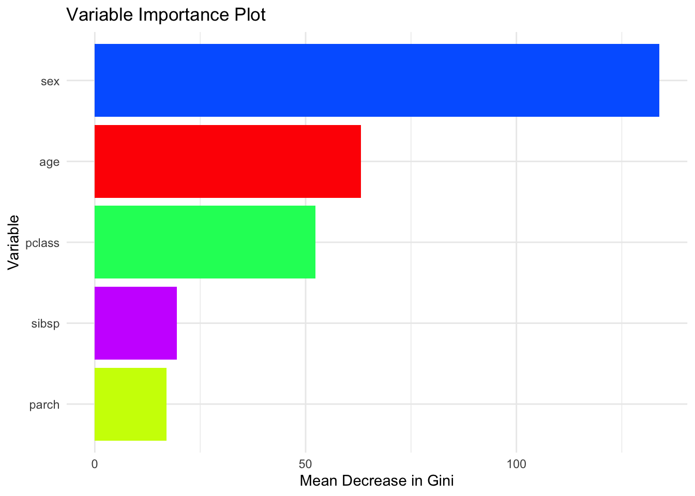
14.3.5 Local Importance
The localImportance = TRUE option in the randomForest package returns a matrix of variable importance scores at the individual level. Each row corresponds to an observation, and each column corresponds to a predictor, with cell values indicating how much that variable contributed to predicting that observation. Unlike global importance measures (e.g., Mean Decrease in Gini), local importance reveals how variable relevance can differ across individuals.
# Train the Random Forest model
rf_model <- randomForest(survived ~ ., data = df, ntree = 500, localImp = TRUE)
# Extract local importance scores
local_importance <- rf_model$localImportance
local_importance[, 1:5]## 1 2 3 4 5
## sex 0.514851485 0.09195402 0.010810811 0.20114943 -0.37297297
## age 0.014851485 0.34482759 0.005405405 0.05747126 0.00000000
## pclass 0.321782178 -0.04022989 -0.172972973 -0.29885057 -0.24864865
## sibsp -0.004950495 -0.02298851 0.037837838 -0.08620690 0.00000000
## parch 0.004950495 0.19540230 0.043243243 -0.23563218 0.01081081# Plot the average local importance
local_importance_avg <- rowMeans(local_importance, na.rm = TRUE)
local_importance_avg <- local_importance_avg[
order(local_importance_avg, decreasing = TRUE)
]
nvar <- length(local_importance_avg)
ggplot(
data = data.frame(
Variable = names(local_importance_avg),
Importance = local_importance_avg
),
aes(x = reorder(Variable, Importance), y = Importance, fill = Variable)
) +
geom_col() +
coord_flip() +
scale_fill_manual(values = rainbow(nvar), guide = FALSE) +
theme_minimal() +
xlab("Variables") +
ylab("Average Local Importance")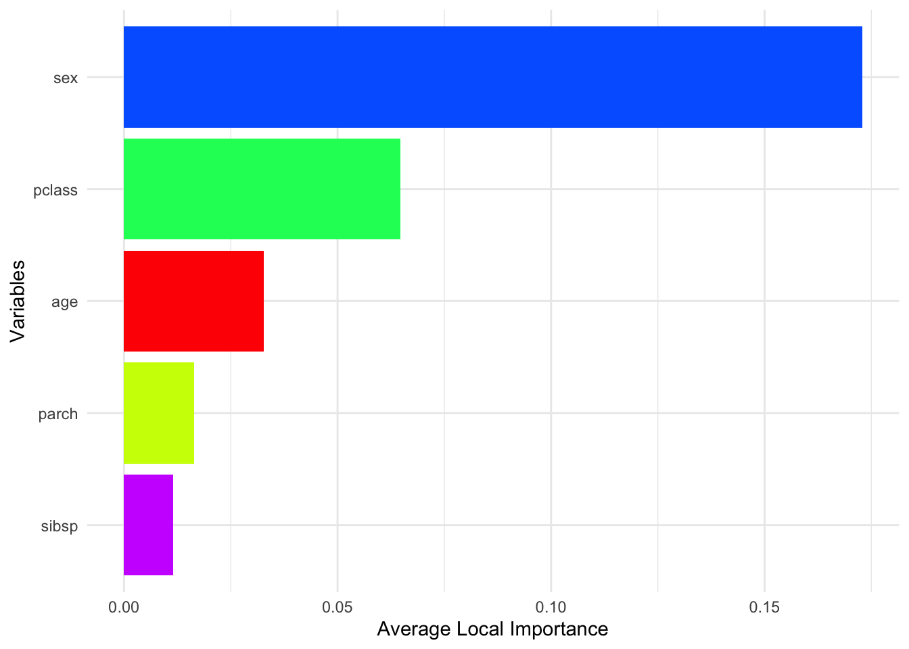
To summarize this high-dimensional output, we can take the average importance score for each variable across all observations. This gives us a sense of which variables are generally most useful across the sample, while still acknowledging that importance is computed locally.
local_importance_with_age <- rbind(local_importance, Age = df$age)
# Extract the local importance for 'Fare' and the values of 'Age'
age_importance <- local_importance_with_age["age", ]
ages <- local_importance_with_age["Age", ]
# Create a data frame for plotting
importance_age_df <- data.frame(Age = ages, AgeImportance = age_importance)
# Plot with ggplot2
library(ggplot2)
n_points <- nrow(importance_age_df)
ggplot(importance_age_df, aes(x = Age, y = AgeImportance, color = Age)) +
geom_point(alpha = 0.7, size = 2) +
scale_color_gradientn(colors = rainbow(7)) +
geom_smooth(color = "black") +
theme_minimal() +
labs(title = "Local Importance of 'Age'",
x = "Age", y = "Local Importance of Age")## `geom_smooth()` using method = 'gam' and formula = 'y ~ s(x, bs = "cs")'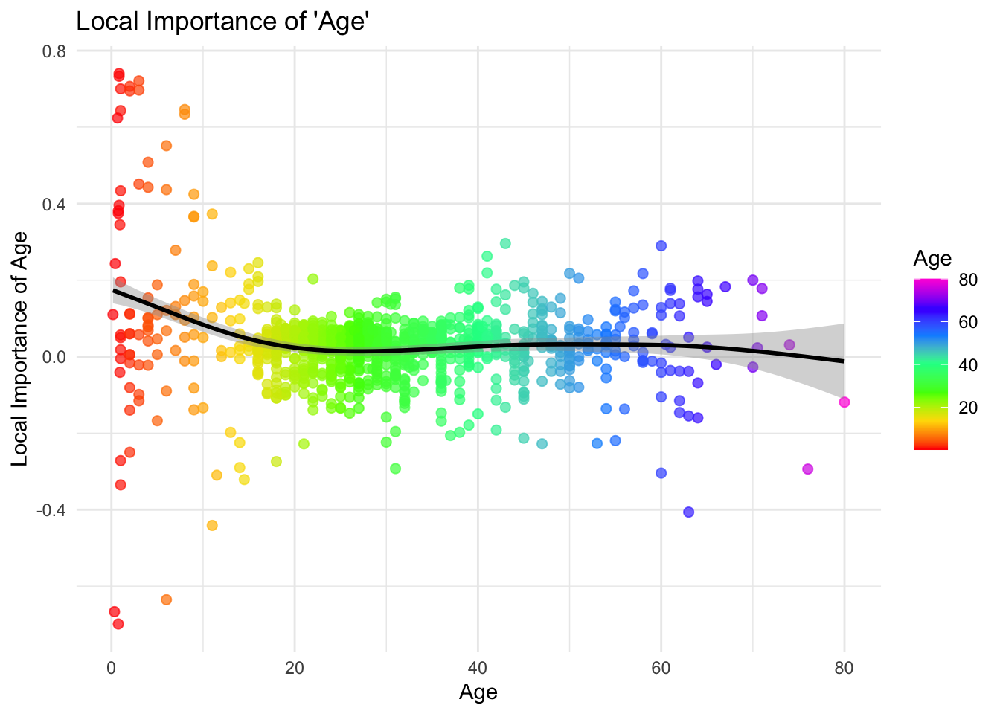
We can also explore how the local importance of a specific variable (e.g., Age) varies with its actual value. Plotting observation-level importance against the covariate itself can uncover nonlinear patterns or heterogeneous effects. For instance, we might observe that Age is more influential in certain age ranges. This type of plot provides more nuance than global summaries and helps us interpret variable relevance in a personalized way.
Partial Dependence Plots
Partial Dependence Plots (PDPs) are a powerful tool for interpreting the effects of features in a machine learning model, including Random Forests. They show the dependence of the target variable on one or two features, averaged over the values of the other features. PDPs can help in understanding the relationship between a feature (or features) and the predicted outcome, regardless of the model complexity.
library(ISLR)
dfr <- data(Hitters)
dfr <- na.omit(Hitters)
dfr$Salary <- log(dfr$Salary)
set.seed(42) # for reproducibility
rf_model_reg <- randomForest(Salary ~ ., data = dfr, ntree = 1000)
# Extract the partial dependence
library(pdp)## Warning: package 'pdp' was built under R version 4.3.3library(ggplot2)
pdp_cruns <- partial(rf_model_reg, pred.var = "CRuns")
autoplot(pdp_cruns,
colour = "red",
size = 1.2) +
theme_minimal() +
labs(title = "Partial Dependence of Salary on CRuns",
x = "CRuns", y = "Predicted log(Salary)")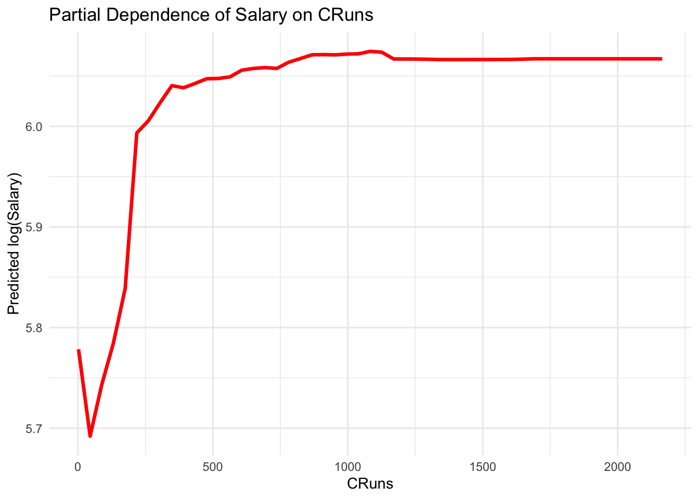
And, variable importance
## IncNodePurity
## AtBat 7.3455433
## Hits 8.7474467
## HmRun 2.6924395
## Runs 4.8806266
## RBI 6.1682936
## Walks 6.1472616
## Years 6.3439290
## CAtBat 38.4968438
## CHits 34.7239086
## CHmRun 7.5009988
## CRuns 34.2645475
## CRBI 21.5538919
## CWalks 16.6938438
## League 0.2817703
## Division 0.2952981
## PutOuts 3.3469015
## Assists 1.8196078
## Errors 1.7097708
## NewLeague 0.3593825For regression, purity is typically measured by the variance or mean squared error (MSE) within each node. A perfectly pure node in regression would have no variance in the response variable (i.e., all instances in the node have the same value for the target variable). Therefore, the decrease in variance or MSE due to splits on a variable is a measure of the importance of the variable. In the regression context, IncNodePurity `represents the total decrease in variance or MSE achieved by splits on each feature across all trees in the forest. A high decrease in variance due to a feature indicates that the feature is important for predicting the target variable.
14.3.6 randomForestExplainer
The randomForestExplainer package is a powerful tool for understanding and interpreting Random Forest models. It provides a suite of functions for visualizing and interpreting the results of Random Forest models. The package is built on top of the DALEX package, which is a popular package for model-agnostic explanations.
library(randomForestExplainer)
# randomForestExplainer()
min_depth_frame <- min_depth_distribution(rf_model)
importance_frame <- measure_importance(rf_model)
importance_frame## variable mean_min_depth no_of_nodes accuracy_decrease gini_decrease
## 1 age 1.566 14709 0.03281681 63.53371
## 2 parch 1.676 5467 0.01636135 16.52178
## 3 pclass 1.058 3813 0.06442979 53.23042
## 4 sex 0.882 1741 0.17236343 133.34472
## 5 sibsp 2.010 6934 0.01137672 18.97330
## no_of_trees times_a_root p_value
## 1 500 44 0.000000e+00
## 2 500 82 1.000000e+00
## 3 500 157 1.000000e+00
## 4 500 208 1.000000e+00
## 5 500 9 1.868887e-08mean_min_depth: The average minimum depth at which a variable is used to split a node. A lower value indicates that the variable tends to appear near the top of the trees and is considered more important for splitting the data.no_of_nodes: The total number of nodes in the forest where the variable is used for splitting. This gives an idea of how frequently the variable is used in making decisions across all trees.accuracy_decrease: The decrease in model accuracy when the variable is permuted. This value represents the importance of the variable, with larger decreases indicating more important variables. It reflects how the prediction error increases when the information provided by the variable is removed, hence showing its contribution to model accuracy.gini_decrease: The total decrease in Gini impurity brought by splits over this variable, summed over all trees. A higher value suggests that the variable is very effective in creating homogeneous nodes and thus is important for the model.no_of_trees: The number of trees in which the variable appears. This can be seen as a measure of consistency of the importance of a variable across the forest.times_a_root: The number of times a variable is used as the root of a tree. Being used as the root (the first split in a tree) suggests that the variable is very discriminative.p_value: The p-value testing the hypothesis that the permutation-based importance measure (such as accuracy decrease) is higher than expected by chance. A low p-value indicates that the importance of the variable is statistically significant, while a p-value of 1 suggests no evidence of importance beyond random chance. The p-value is calculated using a permutation test, which is a non-parametric test that assesses the statistical significance of the importance measure. The null hypothesis is that the variable is not important, and the p-value indicates the probability of observing the importance measure by random chance. A low p-value suggests that the variable is important beyond random chance, while a high p-value suggests that the variable is not important.
In the context of our results:
- Variables like
sexandpclasshave lowermean_min_depthvalues, indicating they are used in top splits and are therefore likely more important. - The
accuracy_decreaseandgini_decreaseforsexare relatively high, underscoring its importance in predicting the outcome. sexalso appears as the root node in many trees (times_a_root), further highlighting its significance.- The
p_valueforparch,pclass, andsexis 1, which at first glance might suggest their importance is not statistically significant beyond random chance. However, the interpretation of this p-value might require careful consideration of the context, model configuration, and how the permutation importance is calculated.
library(ggplot2)
theme_set(theme_minimal())
plot_multi_way_importance(importance_frame, x_measure = "mean_min_depth",
y_measure = "gini_decrease",
size_measure = "p_value", no_of_labels = 6)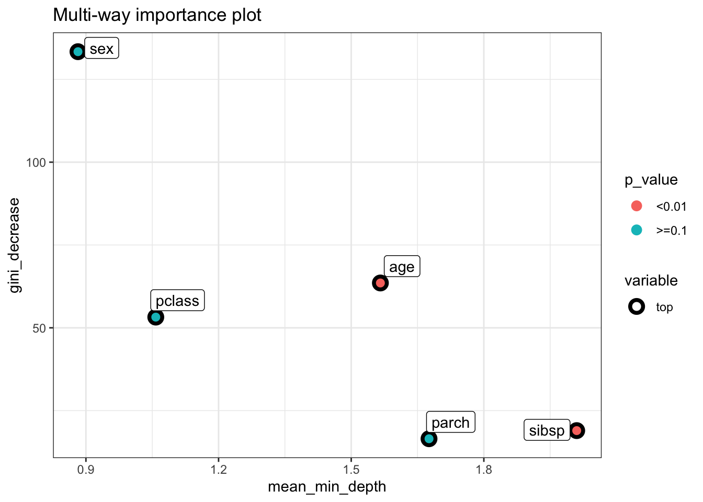
plot_min_depth_distribution(min_depth_frame, mean_sample = "all_trees", k =20,
main = "Distribution of minimal depth and its mean")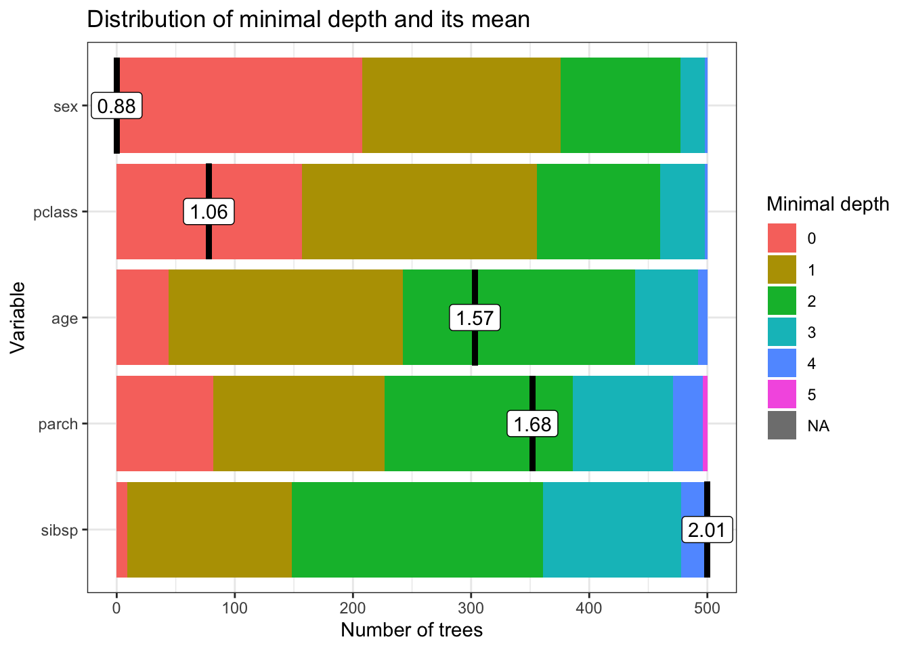
In this chapter, we learned about Bagging and Random Forest, a powerful ensemble learning method that can be used for both classification and regression tasks. We saw how to build Random Forest models in R using the randomForest package and how to evaluate the performance of these models using metrics like OOB error and AUC. We also learned about the importance of variables in Random Forest models and how to calculate and visualize these importance scores. Finally, we saw how to use the randomForestExplainer package to interpret the results of Random Forest models and understand the importance of variables in making predictions.
Beyond R, you can implement Random Forest models in both Stata and Python. In Stata, the rforest command provides a way to fit Random Forest models and assess variable importance, allowing for robust modeling within an econometric framework. In Python, the scikit-learn library offers the RandomForestClassifier and RandomForestRegressor functions, which facilitate model training and evaluation. Additionally, Python’s SHAP and eli5 libraries help interpret variable importance, improving transparency in predictions.
Random Forest and Bagging have been widely applied across economics, social sciences, and health sciences to improve predictive accuracy and interpretability in complex datasets. Breiman (2001) introduced these ensemble methods, showing their effectiveness in reducing variance and improving model performance. In economics, Thoplan (2014) demonstrated how Random Forests improved poverty classification based on socioeconomic indicators, while Sadorsky (2021) used ensemble methods to predict clean energy stock prices, outperforming traditional models. Mullainathan and Spiess (2017) highlighted the potential of machine learning, including Random Forest, for economic policy evaluation, emphasizing its predictive power. Athey and Wager (2019) extended Random Forest to causal inference, applying Generalized Random Forests (GRF) to estimate heterogeneous treatment effects in employment training programs.
In social sciences and health research, Random Forest has been instrumental in identifying key predictors of health outcomes. Puterman et al. (2020) employed Random Forest survival analysis to predict mortality based on economic, behavioral, and psychological factors. Feng et al. (2022) applied a geographical Random Forest approach to rank demographic and socioeconomic contributors to COVID-19 mortality in the U.S. Similarly, Boulesteix et al. (2012) used Random Forest to analyze high-dimensional genomic data for disease classification, demonstrating its advantage over traditional statistical models. Caruana et al. (2006) compared ensemble methods in medical risk prediction, finding that Random Forest outperformed logistic regression in predicting patient mortality and hospital readmission. In environmental science, Prasad, Iverson, and Liaw (2006) applied Random Forest to model tree species distributions, while Cutler et al. (2007) used it for land cover classification in remote sensing. These studies illustrate the broad utility of Random Forest and Bagging in tackling complex, high-dimensional problems across disciplines.
While Bagging and Random Forest provide robust methods to reduce variance and improve predictive accuracy, they primarily rely on averaging multiple independent models. However, in some cases, a more targeted approach to reducing bias is necessary. This leads us to Boosting, an alternative ensemble method that builds models sequentially, each learning from the errors of its predecessors. In the next chapter, we explore Boosting, its key algorithms, and how it differs from Bagging in its approach to improving model performance.